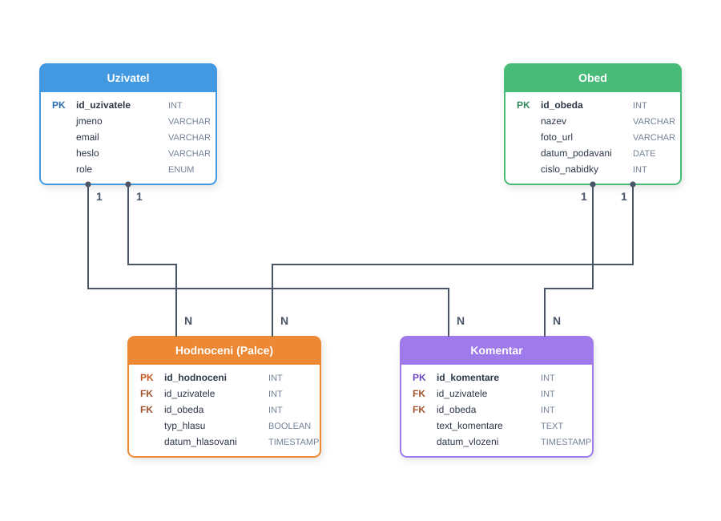
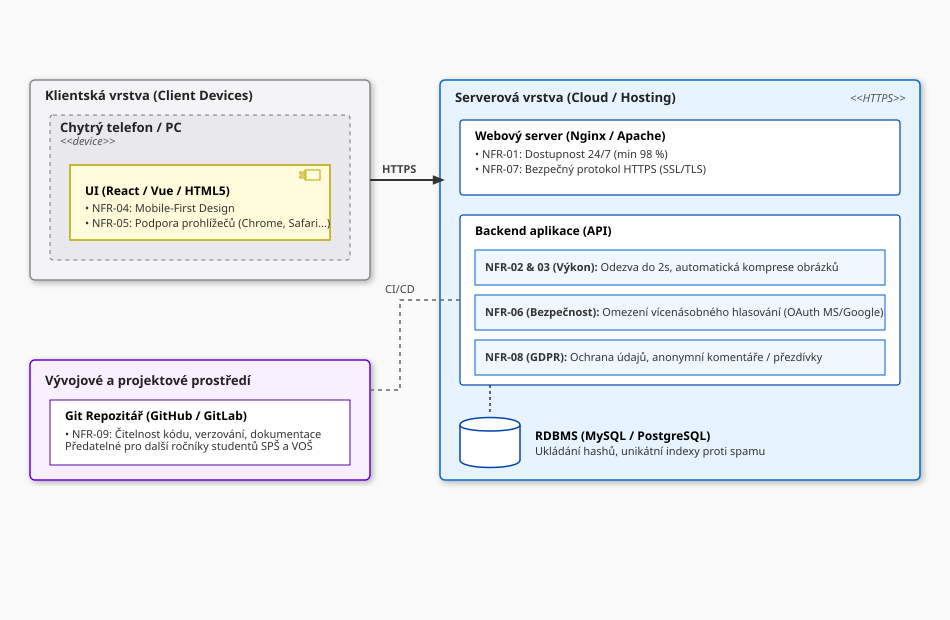

Prumkaskvelyobed
Prumkaskvelyobed je revoluční program, který dovolí strávníkům Střední průmyslové školy a Vyšší odborné školy v Liberci hodnotit a komentovat školní obědy. Strávník může dát obědu palec nahoru a dolů, podle své zkušenosti a názoru na oběd. Pokud nebude hodnocení stačit, může dát strávník i komentář.
Dokumentace

